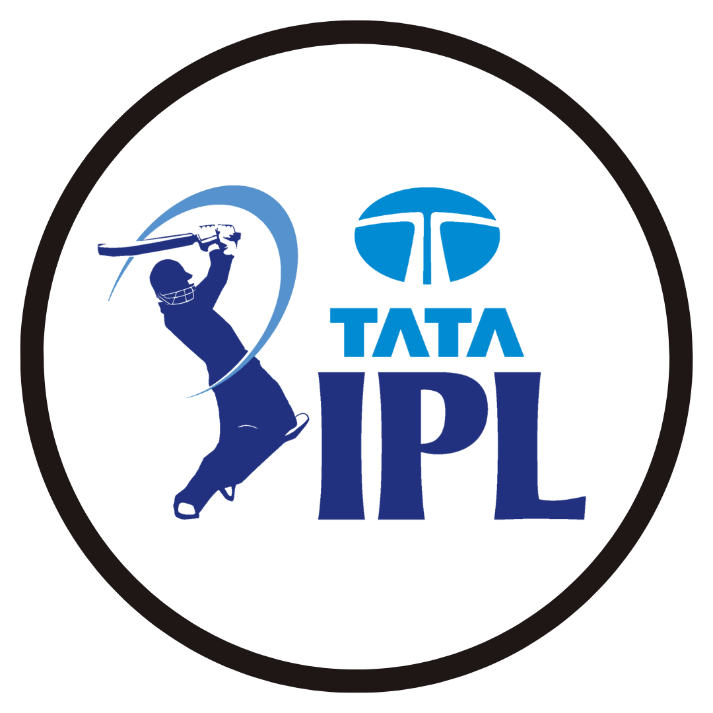

Captain's Archive
In 2008 U-19 under Kane Williamson's captaincy New Zealand reached the semi final of the
tournament.
In 2016 T20 World Cup under Kane Williamson's captaincy New Zealand reached the semi
final of the
tournament.
In 2017 Champions Trophy under Kane Williamson's captaincy New Zealand unfortunately made
an exit in the group stage of
tournament.
In 2018 IPL under Kane Williamson's captaincy SRH topped the points table but faced a
defeat against CSK in the final.
In 2019 ODI World Cup under Kane Williamson's captaincy New Zealand was the runner up
after losing by boundry count.
In 2021 Test Championship under Kane Williamson's captaincy New Zealand won the final by
defeating India.
In 2021 IPL under Kane Williamson's captaincy SRH was on able to qualify in the playoffs.
In 2021 T20 World Cup under Kane Williamson's captaincy New Zealand lost in the final
against Autralia by 8 wickets.

In 2022 Tata IPL SRH was not able to qualify in playoffs under Kane's captaincy
Awards
1. IPL Orange Cap for scoring most runs in 2018 - 735.
2. Named in the IPL XI of the tournament by Cricbuzz in 2018.
3. Player of the Tournament- ICC Cricket World Cup 2019.
4. Captain of Team of the Tournament by Espncricinfo- ICC Cricket World Cup 2019.
5. Selected in the 2nd XI of the 2014 ICC World T20 Cup by ESPNCricinfo.
6. Named in the Test XI of the year by Cricbuzz - 2014.
7. T20 Player of the Year by NZC for the 2014-15 season.
8. 'Team of the Tournament' by Cricinfo and Cricbuzz - ICC T20 World Cup 2016.
9. NZ player of the year- 2016.
10. Test player of the year- 2016
11. Redpath Cup for top batsman in first class cricket -2015,2016.
12. World Test XI by the ICC - 2016.
13. Sir Richard Hadlee Medal - 2015-16 and 2016-17.
14. Named 12th man in the 'Team of the Tournament' at the 2017 Champions Trophy by the ICC and Cricinfo.
15. World Test XI by the ICC - 2018.
16. Named captain of the Test XI by ESPNCricinfo - 2018.
17. Named in the Test XI by Cricbuzz - 2018.
18. In the annual ICC Awards in January 2022, Williamson was included in ICC Men's Test Team of the Year for the
year 2021
Records
1. Youngest centurion in New Zealand Cricket History - 20 years.
2. Eighth New Zealand Cricketer to score a century on Test Debut.
3. Third highest ever strike-rated century by a New Zealander in a One-Day International - 100* for 69 balls.
4. Fifth-fastest batsman in the world and fastest New Zealander to score 3,000 runs.
5. Most Test Runs for New Zealand in a calendar year - 1172 runs in 2015.
6. Thirteenth batsman to score a test century against all test playing nations.
7. First New Zealand cricketer to cross 900 rating points in the ICC Test batting rankings - 2018.
8. Fastest New Zealand Cricketer to score 6,000 runs in test cricket.
Along The Years
| Year |
Age |
Achievement |
| 2007 |
17 |
First-class Debut for Northern Districts |
| 2010 |
20 |
ODI Debut |
| 2010 |
20 |
Test Dubut |
| 2011 |
21 |
T20I Debut |
| 2011 |
21 |
Debut for Gloucestershire |
| 2013 |
23 |
Debut for Yorkshire |
| 2015 |
25 |
Debut for SRH in IPL |